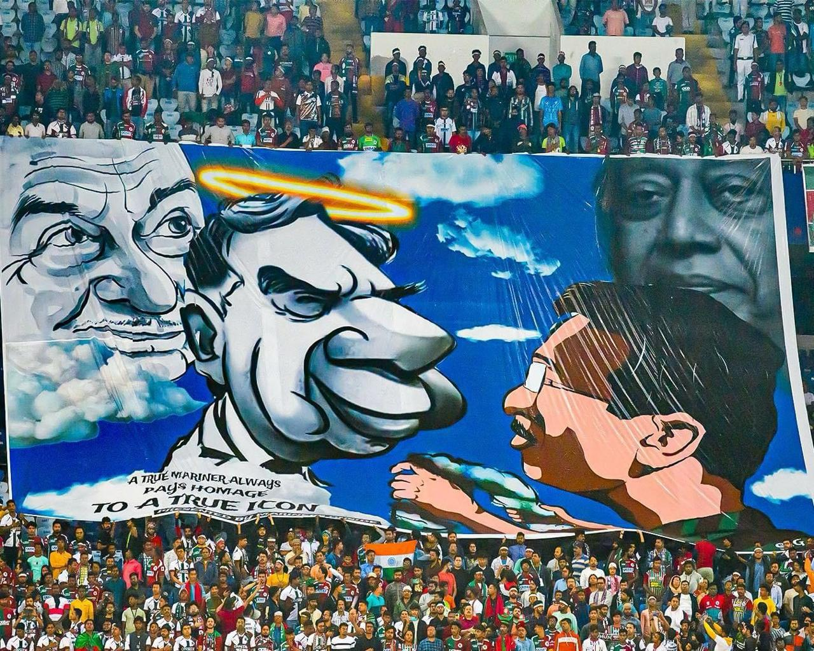
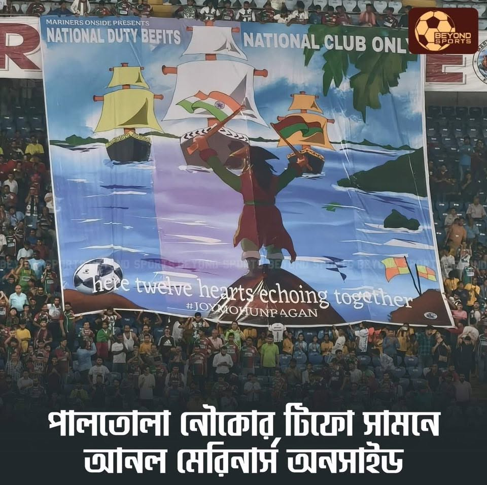
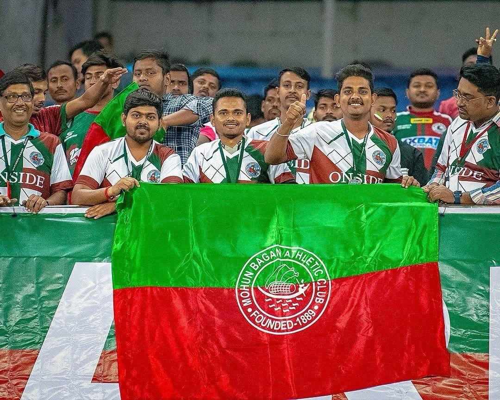
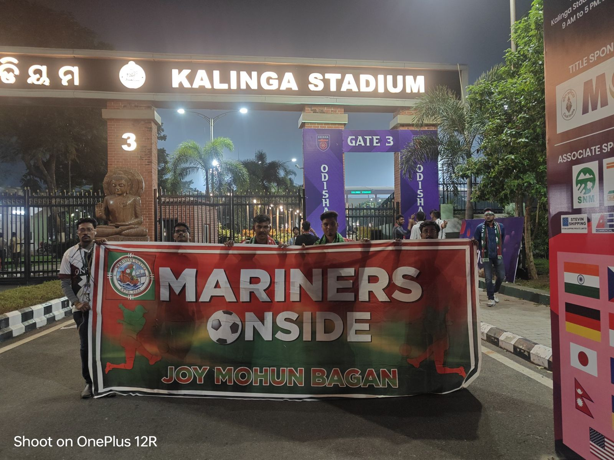
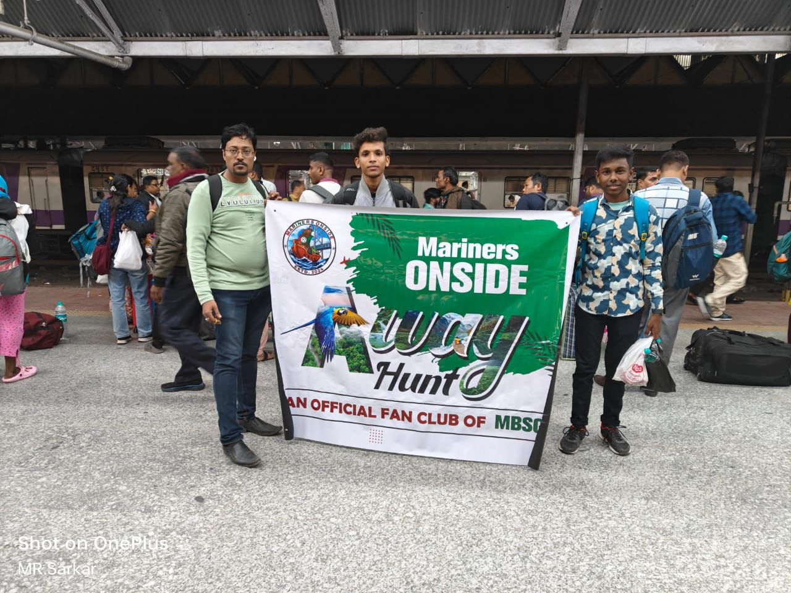
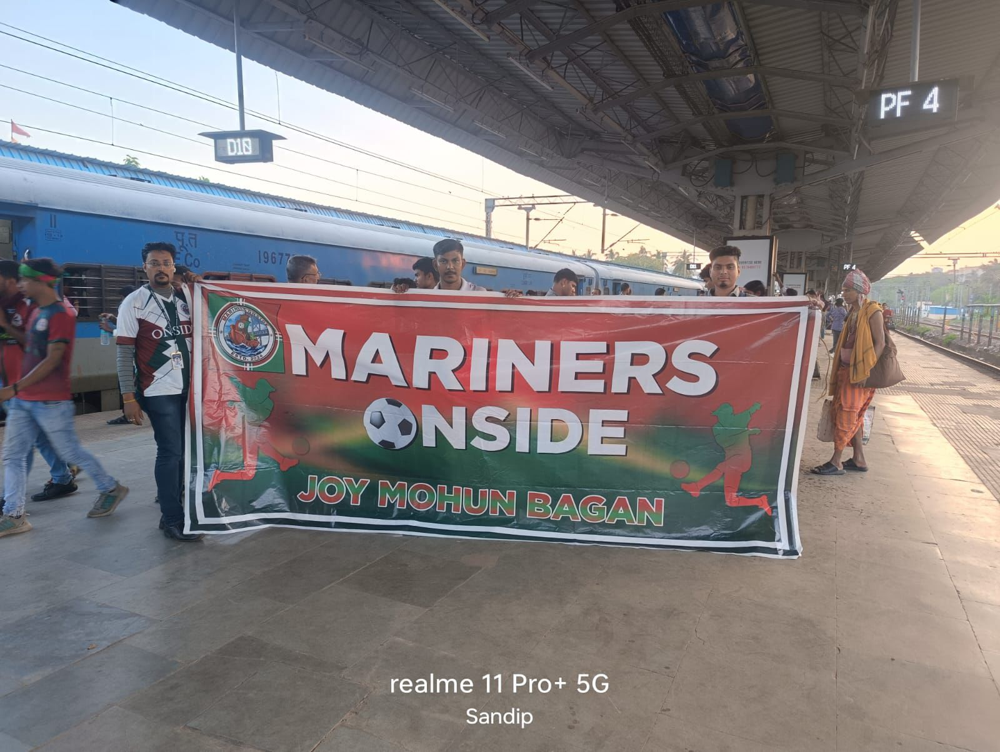
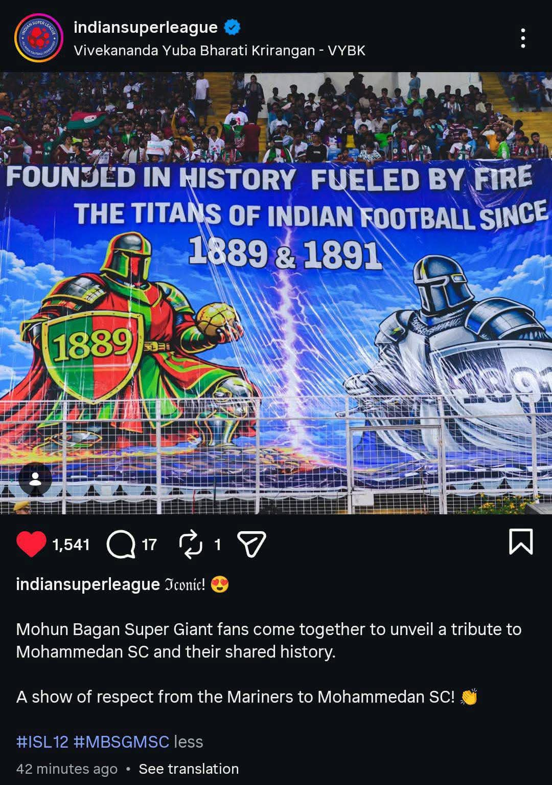

Moments that stay with us forever — etched in green & maroon

The tribute to Ratan Tata Sir at Vivekananda Yuba Bharati Krirangan was a heartfelt moment of respect and gratitude for a visionary who shaped modern India with integrity, compassion, and purpose. In the presence of thousands, the tribute honoured not just an industrial leader, but a humanitarian whose values extended far beyond business. The atmosphere reflected deep admiration for his commitment to nation-building, ethical leadership, and social responsibility. Paying homage at such an iconic venue symbolised how Ratan Tata Sir’s legacy resonates across generations, inspiring people to lead with humility, courage, and care for society at large.

Mariners Onside standing in front of the iconic Sailboat tifo during the Ahal match was a moment that perfectly captured the pride, passion, and identity of the green-and-maroon faithful. As the magnificent tifo unfurled across the stands, symbolising Mohun Bagan’s rich heritage and fearless journey, Mariners Onside stood united, representing unwavering support and loyalty. The sight reflected the powerful bond between the club and its supporters, where history, emotion, and matchday energy came together as one. Moments like these turn a football match into a timeless memory.

Mariners Onside – We Are Together is more than just a line; it is the spirit that defines our community. It represents unity beyond differences, strength in togetherness, and an unbreakable bond rooted in love for Mohun Bagan. Whether in celebration or challenge, on matchdays or in moments of social responsibility, Mariners Onside stands as one family, supporting each other with pride and purpose. This togetherness is our identity — voices united, hearts aligned, and everyone always standing onside for the club and for one another.

Mariners Onside at Kalinga Stadium was a proud and powerful representation of the green-and-maroon spirit beyond home soil. Carrying passion across miles, the Mariners Onside family made their presence felt with unwavering energy, chants, and unity, turning the stands into a reflection of home. Their support echoed throughout the stadium, standing firmly behind the team from kickoff to the final whistle. Moments like these highlight that Mariners Onside is not limited by geography — wherever Mohun Bagan plays, its people follow, united, loyal, and always onside.

Mariners Onside Away Match Hunt represents the fearless passion of supporters who go the extra mile to stand beside their club, no matter the distance. It is about travelling together, planning, and turning every away game into a home-like atmosphere through chants, colours, and unity. Each away match hunt reflects commitment, brotherhood, and the determination to support Mohun Bagan beyond familiar grounds. These journeys build memories, strengthen bonds, and showcase that true support knows no boundaries.

The away match journeys of Mariners Onside are proof that passion has no limits. Travelling far, standing strong, and roaring loud — this is what it means to be part of this family. Every mile travelled, every chant raised, and every moment shared strengthens the bond that ties us all to Mohun Bagan. We don’t just support from the stands — we live it, breathe it, and carry it wherever the team goes. Forever together. Forever onside.

The away match journeys of Mariners Onside are proof that passion has no limits. Travelling far, standing strong, and roaring loud — this is what it means to be part of this family. Every mile travelled, every chant raised, and every moment shared strengthens the bond that ties us all to Mohun Bagan. We don’t just support from the stands — we live it, breathe it, and carry it wherever the team goes. Forever together. Forever onside.